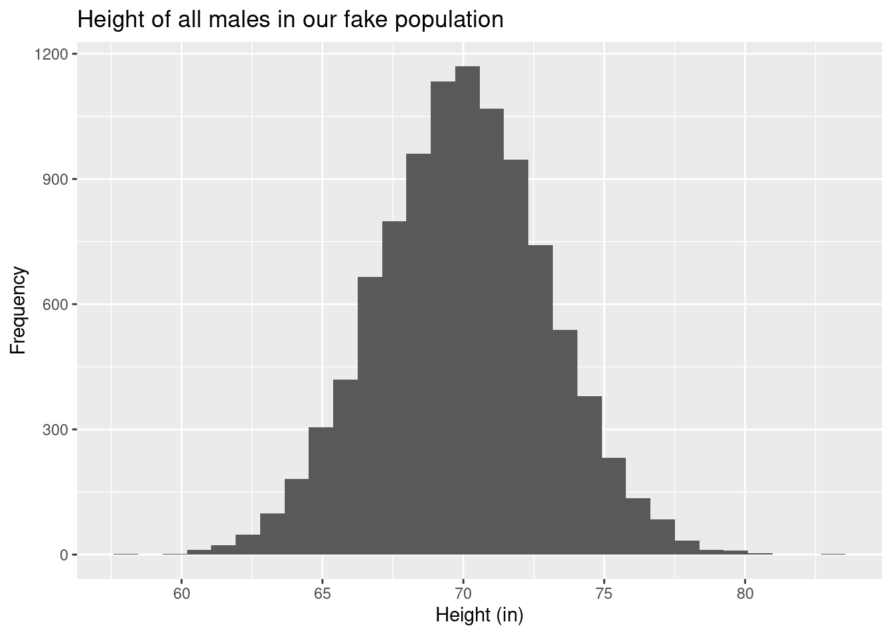
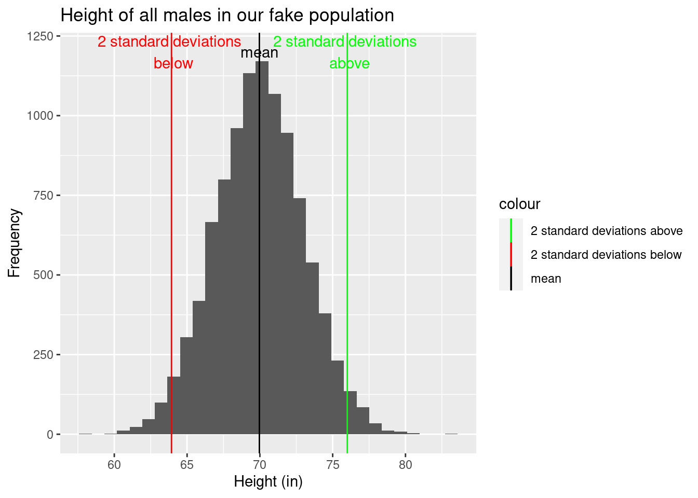
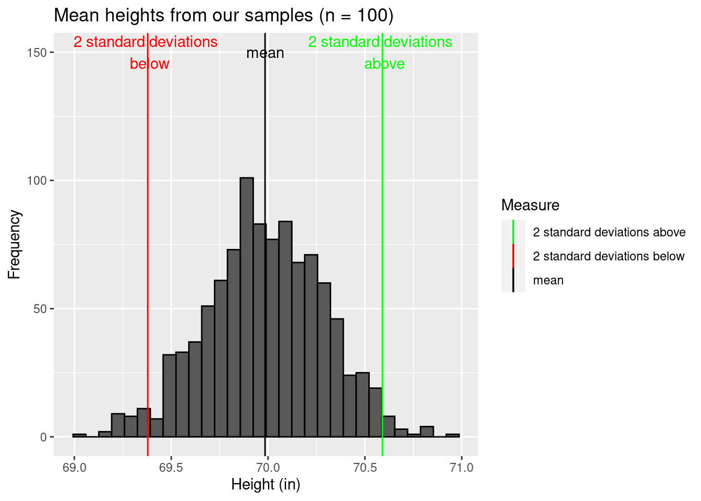
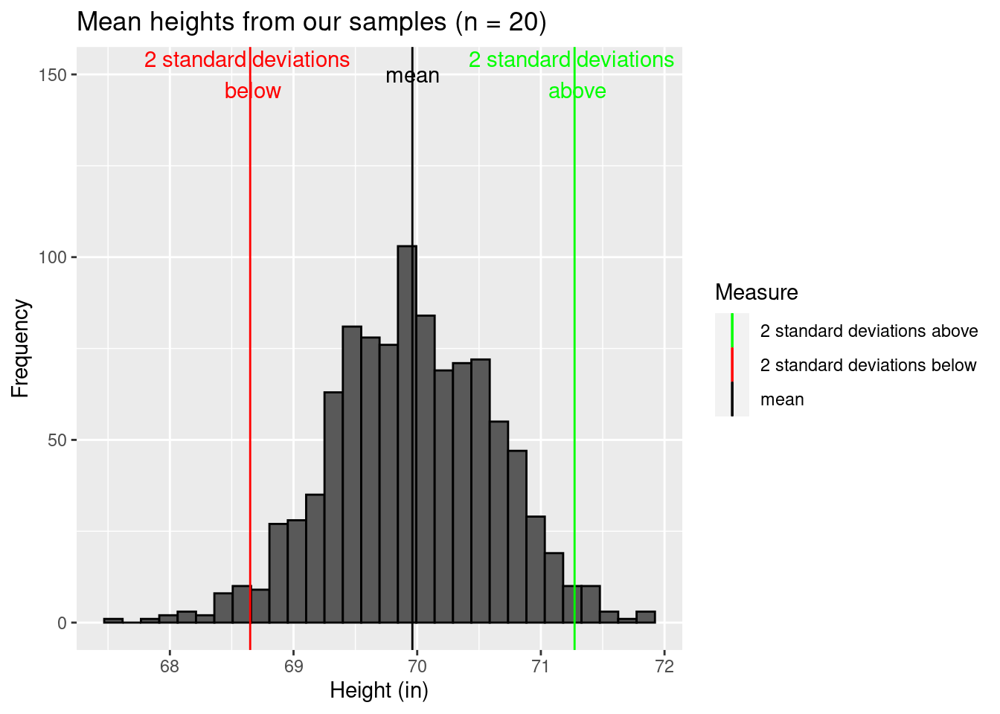
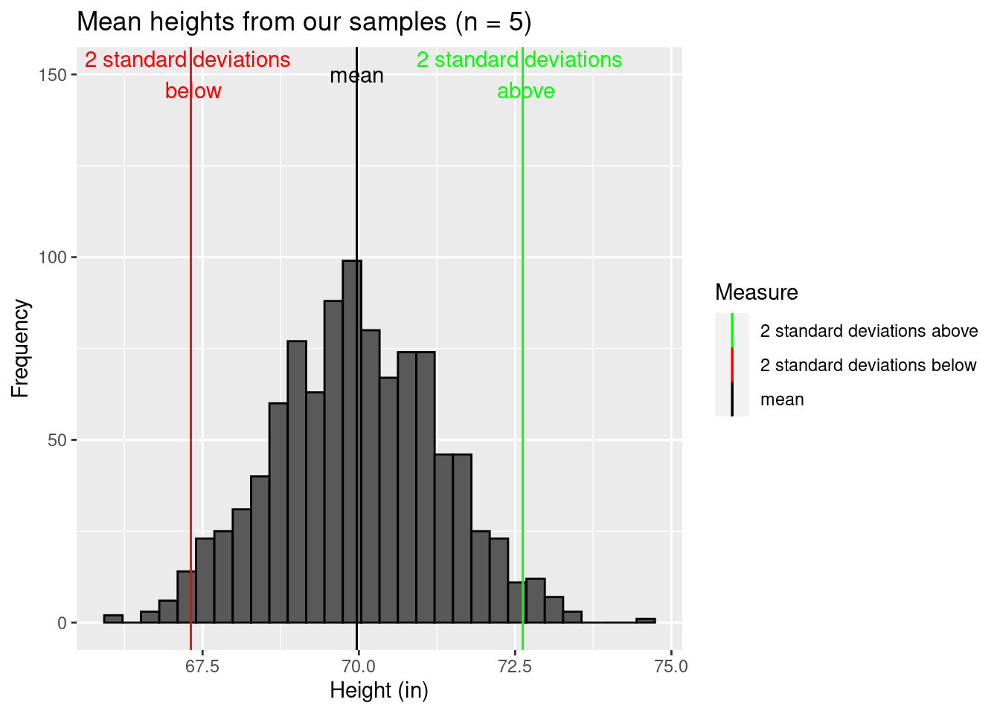
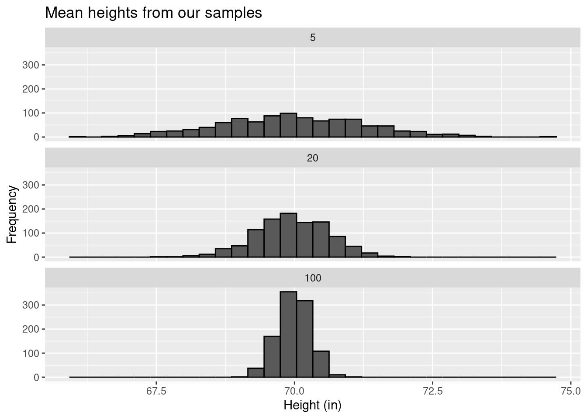
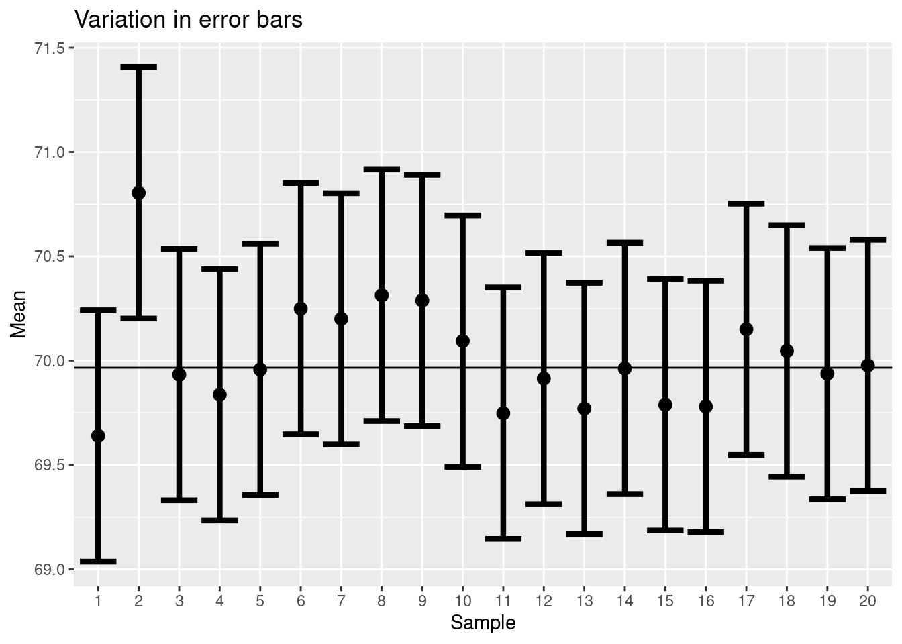

Now that we can describe data distributions, we want to start thinking about how we quantify the uncertainty in our estimates (of \(\mu\), for example). Remember, we typically want to describe a population but need to rely on a sample, and we’ve already talked about sampling error. So now we just want to think about how much error we typically have (or, alternatively, how precise are our estimates).
Answering this question is hard. Quantifying sampling error requires you to know the “true” value for a population parameter, but we only have estimates! Statisticians solve this problem by investigating sampling error in populations they fully know because they created them.
For example, let’s assume we measure all the males in a population. Furthermore, let’s assume the distribution of heights is normal. Remember, this means the distribution is roughly symmetric, with tails on either side. Values near the middle of the range are more common, with the chance of getting smaller or larger values declining at an increasing rate. In fact, in turns out ~95% of the data lies within two standard deviations (remember those?) of the mean (so we calculate the mean and then the standard deviation. We then subtract the standard deviation from the mean to find a lower bound. We then add the standard deviation from the mean to find an upper bound. These bounds denote where 95% of the data points will be found).
Let’s see this in action. First, lets make a population and graph it
set.seed(42)population_size <-10000population_norm <-data.frame(id =1:population_size, height =rnorm(population_size, 70, 3))library(ggplot2)ggplot(population_norm, aes(height)) +geom_histogram(color="black") +labs(x="Height (in)", y="Frequency",title ="Height of all males in our fake population")
`stat_bin()` using `bins = 30`. Pick better value with `binwidth`.

Figure 1: Our imaginary population!
Now let’s add the mean (69.97 in) and mark two standard deviations (sd = 3.02 in) above and below it.
colors <-c("mean"="black", "2 standard deviations below"="red", "2 standard deviations above"="green")ggplot(population_norm, aes(height)) +geom_histogram(color="black") +labs(x="Height (in)", y="Frequency",title ="Height of all males in our fake population",color="Measure") +geom_vline(aes(xintercept=mean(height), color="mean"))+geom_vline(aes(xintercept=mean(height)-2*sd(height), color="2 standard deviations below"))+geom_vline(aes(xintercept=mean(height)+2*sd(height), color="2 standard deviations above")) +scale_color_manual(values = colors)+annotate("text", label ="mean", y =1200, x =mean(population_norm$height), color ="black") +annotate("text", label ="2 standard deviations \n below", y =1200, x =mean(population_norm$height)-2*sd(population_norm$height), color ="red")+annotate("text", label ="2 standard deviations \n above", y =1200, x =mean(population_norm$height)+2*sd(population_norm$height), color ="green")
`stat_bin()` using `bins = 30`. Pick better value with `binwidth`.

Figure 2: Our imaginary population!
This bound captures 95.53% of the data.
Now let’s sample the population. We’ll start by drawing a sample of 100 from the population. This is true random sampling, so any differences are due to sampling error.
sample_1 <- population_norm[sample(nrow(population_norm), 100),]ggplot(sample_1, aes(height)) +geom_histogram() +labs(x="Height (in)", y="Frequency",title ="Height of 100 random males in our fake population")
`stat_bin()` using `bins = 30`. Pick better value with `binwidth`.
For this sample, we have a mean of 69.78 in and a standard deviation of 3.11 in.
Here’s the tricky part. We typically only have one sample, but we want to discuss the uncertainty in our estimate. So, let’s explore this by drawing multiple samples (each of 100 individuals) from our population and finding the mean for each sample.
ggplot(sample_outcomes_1, aes(mean)) +geom_histogram(color="black") +labs(x="Height (in)", y="Frequency",title ="Mean heights from our samples (n = 100)",color="Measure") +geom_vline(aes(xintercept=mean(mean), color="mean"))+geom_vline(aes(xintercept=mean(mean)-2*sd(mean), color="2 standard deviations below"))+geom_vline(aes(xintercept=mean(mean)+2*sd(mean), color="2 standard deviations above")) +scale_color_manual(values = colors)+annotate("text", label ="mean", y =150, x =mean(sample_outcomes_1$mean), color ="black") +annotate("text", label ="2 standard deviations \n below", y =150, x =mean(sample_outcomes_1$mean)-2*sd(sample_outcomes_1$mean), color ="red")+annotate("text", label ="2 standard deviations \n above", y =150, x =mean(sample_outcomes_1$mean)+2*sd(sample_outcomes_1$mean), color ="green")
`stat_bin()` using `bins = 30`. Pick better value with `binwidth`.

For our sample of means (this should sound weird!), we have a mean of 69.98 in and a standard deviation of 0.3 in.
Note this suggests the mean of our means is close to the true population value of \(\mu\). But the spread of our means (their standard deviation) is much less than the spread of the actual population! How much less? Let’s consider a set of smaller samples (n = 20).
sample_outcomes_2 <-data.frame(mean =rep(NA, number_of_samples), sd =NA)for (i in1:number_of_samples){ sample_2 <- population_norm[sample(nrow(population_norm), 20),] sample_outcomes_2$mean[i] <-mean(sample_2$height) sample_outcomes_2$sd[i] <-sd(sample_2$height)}ggplot(sample_outcomes_2, aes(mean)) +geom_histogram(color="black") +labs(x="Height (in)", y="Frequency",title ="Mean heights from our samples (n = 20)",color="Measure") +geom_vline(aes(xintercept=mean(mean), color="mean"))+geom_vline(aes(xintercept=mean(mean)-2*sd(mean), color="2 standard deviations below"))+geom_vline(aes(xintercept=mean(mean)+2*sd(mean), color="2 standard deviations above")) +scale_color_manual(values = colors)+annotate("text", label ="mean", y =150, x =mean(sample_outcomes_2$mean), color ="black") +annotate("text", label ="2 standard deviations \n below", y =150, x =mean(sample_outcomes_2$mean)-2*sd(sample_outcomes_2$mean), color ="red")+annotate("text", label ="2 standard deviations \n above", y =150, x =mean(sample_outcomes_2$mean)+2*sd(sample_outcomes_2$mean), color ="green")
`stat_bin()` using `bins = 30`. Pick better value with `binwidth`.

This new sample of means has a mean of 69.96 in and a standard deviation of 0.66 in. So, the estimate for \(\mu\) is still close to the same, but the standard deviation of our estimates is growing.
This is even more clear if we sample only 5 individuals.
sample_outcomes_3 <-data.frame(mean =rep(NA, number_of_samples), sd =NA)for (i in1:number_of_samples){ sample_3 <- population_norm[sample(nrow(population_norm), 5),] sample_outcomes_3$mean[i] <-mean(sample_3$height) sample_outcomes_3$sd[i] <-sd(sample_3$height)}ggplot(sample_outcomes_3, aes(mean)) +geom_histogram(color="black") +labs(x="Height (in)", y="Frequency",title ="Mean heights from our samples (n = 5)",color="Measure") +geom_vline(aes(xintercept=mean(mean), color="mean"))+geom_vline(aes(xintercept=mean(mean)-2*sd(mean), color="2 standard deviations below"))+geom_vline(aes(xintercept=mean(mean)+2*sd(mean), color="2 standard deviations above")) +scale_color_manual(values = colors)+annotate("text", label ="mean", y =150, x =mean(sample_outcomes_3$mean), color ="black") +annotate("text", label ="2 standard deviations \n below", y =150, x =mean(sample_outcomes_3$mean)-2*sd(sample_outcomes_3$mean), color ="red")+annotate("text", label ="2 standard deviations \n above", y =150, x =mean(sample_outcomes_3$mean)+2*sd(sample_outcomes_3$mean), color ="green")
`stat_bin()` using `bins = 30`. Pick better value with `binwidth`.

where we find a mean of 69.97 in and a standard deviation of 1.33 in.
If we facet the graphs (and let them share an x-axis) we can see this even better
`stat_bin()` using `bins = 30`. Pick better value with `binwidth`.

You can clearly see larger sample sizes lead to a more “clustered’ group of means (so there is less uncertainty in the measurements!). This is why larger estimates make us more confident in our estimates - the means we get are less likely to be far away! In other words, larger samples yield more precise estimates with lower spread (lower sampling error).
We call the standard deviation of our means the standard error. We can calculate this as
Also, note distribution of means was normal (which we will define even better in a few lectures!). For now, that means we can get 95% of the sample means within ~2 standard deviations of the mean of means, which is very close to the true mean. Conversely, if we use data from each sample to generate a an interval ~2 standard deviations above and below each sample mean, these intervals will contain the true mean 95% of the time. We call this range a 95% confidence interval. For example,
Warning: Using `size` aesthetic for lines was deprecated in ggplot2 3.4.0.
ℹ Please use `linewidth` instead.

Notice one of samples (#2) has a range that does not include the true mean of the population!
Also (we’ll come back to this), the “~2” is based on sample size. The value actually trends towards 1.96 at large sample sizes, but at sample sizes over ten 2 is a good estimate. We could also have other numbers. For example, we could have a 90% confidence interval.
Would it be wider or narrower compared to a 95% interval?
If you are less confident in the interval (90% vs 95%), the interval itself will get smaller (only 90% of samples need to have the true mean!)
Finally (and more compicated), note this assumes we have lots of samples, but we typically only have one. The average probability of the first 95% CI capturing the true sample mean is only around 83% Kalinowski (2010).
Need to see this another way
These two simulations (produced by UBC) will allow you to see this another way!
Finally, it turns out the underlying distribution of data doesn’t matter. The means of the data will be normally distributed as long as you have a large sample size.